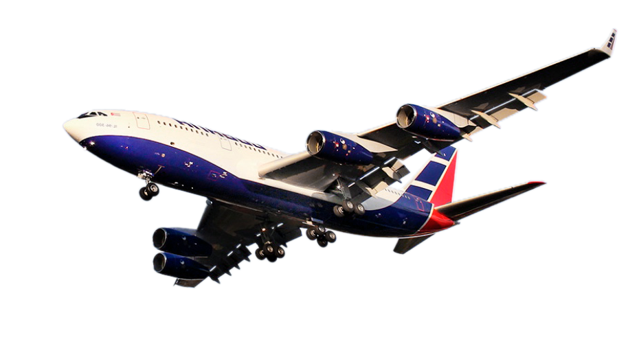

Более 20 лет работы
На протяжении более 20 лет «НПФ СКТ» работает с ОАО «ИЛ». За это время была создана полная линейка средств подготовки летного состава на воздушном судне Ил-96-300, включающая в себя современный компьютерный класс, процедурный тренажер, полнопилотажный тренажер.
Технические средства
Технические средства установлены в учебном центре ПАО «Аэрофлот» и успешно используются для подготовки летного состава на воздушном судне Ил-96-300 и в настоящее время.
Разработка «НПФ СКТ»
Комплексный тренажер Ил-96 разработан и построен российской научно-производственной фирмой «Системы комплексных тренажеров» («НПФ СКТ»)".
Разработка НПФ «СКТ»
Виды тренировок на ПТС: Для удобства отдельные пульты и органы управления могут быть представлены в виде полноразмерных макетов. В нашем варианте процедурного тренажера установлен имитатор козырька приборной доски пилотов, состоящий из пульта управления автопилотом и пультов сигнализации и приоритета. Также на тренажере установлены имитаторы лицевых панелей вычислительной системы самолетовождения.
Сенсорные мониторы
Процедурные тренажеры (Flight Procedures Training Device) предназначены для отработки экипажем процедур подготовки и выполнения полета. В тренажерах такого назначения пульты, приборы и органы управления обычно имитируется с помощью сенсорных мониторов.
Разработка НПФ «СКТ»
Комплексный тренажер Ил-96 разработан и построен российской компанией НПФ «СКТ» (Санкт-Петербург) по заказу лизинговой компании ОАО «Ильюшин Финанс Ко.».
Обучение
Обучение проводится по трем направлениям: переобучение/переподготовка пилотов (летных экипажей) , переобучение/переподготовка бортпроводников (кабинных экипажей) и переобучение/переподготовка инженерно-технического персонала (ИТП АиРЭО и СиД) .
| Наземная подготовка(теория) | 120 часов |
| Тренировка на процедурном тренажере (в составе летного экипажа) | 20 часов |
| Тренировка на комплексном тренажере (в составе летного экипажа) | 40 часов |
| Теоретическая подготовка(теория) | 80 часов |
| Предоставление инструктора для проведения обучения по программе, на комплексном тренажере Ан-148 | 16 часов |
| Предоставление пилота-инструктора для проведения сессий «LOFT» на комплексном тренажере Ан-148 по программе | 4 часа |
| Предоставление комплексного тренажера Ан-148 по программе | 4 часа |
| Теоретическая подготовка(теория) | 40 часов |
| Предоставление инструктора на процедурный тренажер. | 12 часов |
| Модуль 1 (теоретическая подготовка) | 40 часов |
| Модуль 2 (практическая подготовка) | 17 часов |
| Модуль 3 (дополнительная подготовка) | 22 часа |
| Модуль 4 (подготовка к выполнению международных полетов) | 176 часа |
- *Продолжительность подготовки по Курсам повышения квалификации летного состава на ВС Ан-148 может быть изменена в случае с внедрением дистанционных образовательных технологий.
| 1. |
Нормы и требования охраны труда:
Лекции - 2 часа, самоподготовка - 1 час |
| 2. |
Конструкция и эксплуатация систем и оборудования ВС:
Лекции - 8 часов, практика - 4 часа. Форма контроля - экзамен |
| 3. |
Бытовое оборудование ВС и его эксплуатация:
Лекции - 1 час, практика - 1 час. Форма контроля - экзамен |
| 4. |
Технология обслуживания пассажиров на борту ВС. Организация
питания на борту ВС:
Лекции - 1 час, самоподготовка - 7 часов. Форма контроля - экзамен |
| 5. |
Аварийно-спасательная подготовка. Бортовое аварийно-спасательное
оборудование*:
Лекции - 6 часов, практика - 10 часов. Форма контроля - экзамен |
| Всего: |
Лекции - 17 часов. Практика - 15 часов. Самоподготовка - 8 часов. |
| № п.п. | Наименование дисциплин | Всего, час. | Лекции | Практические занятия | Самоподготовка | Форма контроля |
|---|---|---|---|---|---|---|
| 1. | Нормы и требования охраны труда | 2 | 1 | - | 1 | - |
| 2. | Конструкция и эксплуатация систем и оборудования ВС. | 12 | 8 | 4 | - | Экзамен |
| 3. | Бытовое оборудование ВС и его эксплуатация. | 2 | 1 | 1 | - | Экзамен |
| 4. | Технология обслуживания пассажиров на борту ВС. Организация питания на борту ВС. | 8 | 1 | - | 7 | Экзамен |
| 5. | Аварийно-спасательная подготовка. Бортовое аварийно-спасательное оборудование. * | 16 | 6 | 10 | - | Экзамен |
| Итого | 40 | 17 | 15 | 8 | Экзамен |
- * При проведении занятий по дисциплине «Аварийно-спасательная подготовка. Бортовое аварийно-спасательное оборудование» используется программа по аварийно-спасательной подготовке членов летного и кабинного экипажа ВС Ан-148, утвержденная в установленном порядке.
| 1. |
Основы воздушно-правовой подготовки:
Лекции - 4 часа. Форма контроля - зачет |
| 2. |
Конструкция и эксплуатация систем и оборудования ВС. Бытовое
оборудование ВС и его эксплуатация:(1)
Лекции - 4 часа. Практика - 4 часа. Форма контроля - зачет |
| 3. |
Аварийно-спасательная подготовка:(2)
Лекции - 8 часов. Практика - 8 часов. Форма контроля - зачет |
| 4. |
Перевозка опасных грузов воздушным транспортом: (3)
Лекции - 11 часов. Практика - 1 час. Форма контроля - зачет |
| 5. |
Организация перевозок на воздушном транспорте:
Лекции - 4 часа. Форма контроля - зачет |
| 6. |
Специальная подготовка в области человеческого фактора (CRM
Training)
Лекции - 4 часа. Форма контроля - зачет |
| 7. |
Обеспечение авиационной безопасности: (4)
Лекции - 8 часов. Форма контроля - зачет |
| 8. |
Медицинское обслуживание (оказание первой доврачебной помощи на
борту ВС)
Лекции - 6 часов. Практика - 2 часа. Форма контроля - зачет |
| 9. |
Технология обслуживания пассажиров. Организация питания на
борту. Психология общения:
Лекции - 4 часов. Практика - 4 часа. Форма контроля - зачет |
| 10. |
Профессиональный английский язык
Лекции - 4 часов. Практика - 4 часа. Форма контроля - зачет |
| Всего: | Лекции - 57 часов. Практика - 23 часов. |
| № п.п. | Наименование дисциплин | Всего, час. | Лекции | Практические занятия | Форма контроля |
|---|---|---|---|---|---|
| 1. | Основы воздушно-правовой подготовки. | 4 | 4 | - | Зачет |
| 2. | Конструкция и эксплуатация систем и оборудования ВС. Бытовое оборудование ВС и его эксплуатация. (1) | 8 | 4 | 4 | Зачет |
| 3. | Аварийно-спасательная подготовка. (2) | 16 | 8 | 8 | Зачет |
| 4. | Перевозка опасных грузов воздушным транспортом. (3) | 12 | 11 | 1 | Зачет |
| 5. | Организация перевозок на воздушном транспорте. | 4 | 4 | - | Зачет |
| 6. | Специальная подготовка в области человеческого фактора (CRM Training). | 4 | 4 | - | Зачет |
| 7. | Обеспечение авиационной безопасности. (4) | 8 | 8 | - | Зачет |
| 8. | Медицинское обслуживание (оказание первой доврачебной помощи на борту ВС). | 8 | 6 | 2 | Зачет |
| 9. | Технология обслуживания пассажиров. Организация питания на борту. Психология общения. | 8 | 4 | 4 | Зачет |
| 10. | Профессиональный английский язык. | 8 | 4 | 4 | Зачет |
| Итого | 80 | 57 | 23 | Зачет |
- (1) Указанное количество часов при изучении одного из заявленных типов ВС.
- (2) Указанное количество часов при изучении одного типа ВС.
- (3) При проведении занятий по дисциплине «Перевозка опасных грузов воздушным транспортом» используется программа повышения квалификации членов экипажа (кроме членов летного экипажа) по курсу «Перевозка опасных грузов воздушным транспортом» (11 категория ИКАО), утвержденная в установленном порядке.
- (4) При проведении занятий по дисциплине «Обеспечение авиационной безопасности» используется программа повышения квалификации членов экипажа по курсу «КПК по авиационной безопасности членов экипажей», утвержденная в установленном порядке.
- *Продолжительность подготовки по Курсам повышения квалификации летного состава на ВС Ан-148 может быть изменена в случае с внедрением дистанционных образовательных технологий.
Занятия по дисциплине «Аварийно-спасательная подготовка» включают в себя занятия по АСП - водная подготовка. При изучении дополнительного типа ВС, время на обучение по дисциплине «Аварийно-спасательная подготовка» составляет:
2 типа ВС – 20 часов
3 типа ВС – 24 часа
4 типа ВС – 28 часов
При проведении занятий по дисциплине «Аварийно-спасательная подготовка» используется программа по Ежегодной аварийно-спасательной подготовки членов летного и кабинного экипажа ВС Ан-148, утвержденная в установленном порядке.
| 1. |
Электрооборудование самолёта АН-148:
Лекции - 53 часа. Практика - 4 часа. |
| 2. |
Приборное оборудование самолёта АН-148:
Лекции - 53 часа. Практика - 4 часа. |
| 3. |
Радио оборудование самолёта АН-148:
Лекции - 53 часа. Практика - 4 часа. |
| 4. |
Конструкция самолёта АН-148:
Лекции - 4 часа |
| 5. |
Конструкция двигателей и ВСУ:
Лекции - 3 часа. |
| 6. |
Основы практической Аэродинамики:
Лекции - 2 часа. |
| Всего: | Лекции - 168 часов. Практика - 16 часов. |
| № п.п. | Наименование дисциплин | Количество академических часов | Лекции | Практика |
|---|---|---|---|---|
| 1. | Электрооборудование самолёта АН-148 | 57 | 53 | 4 |
| 2. | Приборное оборудование самолёта АН-148 | 57 | 53 | 4 |
| 3. | Радио оборудование самолёта АН-148 | 57 | 53 | 4 |
| 4. | Конструкция самолёта АН-148 | 4 | 4 | |
| 5. | Конструкция двигателей и ВСУ | 3 | 3 | |
| 6. | Основы практической Аэродинамики | 2 | 2 | - |
| Всего: | 180 | 168 | 18 |
| 1. |
Конструкция самолета Ан-148:
83 часа |
| 2. |
Конструкция двигателя Д-436-148 и ВСУ АИ-450 МС:
71 час |
| 3. |
Электрооборудование самолета Ан-148:
10 часов |
| 4. |
Приборное оборудование самолета Ан-148:
6 часов |
| 5. |
Радиооборудование самолета Ан-148:
8 часов |
| Всего: | 180 часов. |
| № п.п. | Наименование дисциплин | Количество часов |
|---|---|---|
| 1. | Конструкция самолета Ан-148 | 83 |
| 2. | Конструкция двигателя Д-436-148 и ВСУ АИ-450 МС | 71 |
| 3. | Электрооборудование самолета Ан-148 | 10 |
| 4. | Приборное оборудование самолета Ан-148 | 6 |
| 5. | Радиооборудование самолета Ан-148 | 8 |
| 6. | Основы практической аэродинамики самолета Ан-148 | 2 |
| Итого: | 180 |
О самолете
Ил-96-300 — первый советский дальнемагистральный широкофюзеляжный самолёт, рассчитаный на 300—435 пассажиров и дальность полёта 9000 км. Спроектирован в КБ Ильюшина в конце 1980-х годов. производится серийно на заводе Воронежского акционерного самолётостроительного общества.
Максимальная дальность полёта:
— 9 000 км, при максимальной загрузке;
— 13 500 км, при количестве пассажиров 269 человек и с полным запасом топлива.
Крейсерская скорость — 870 км/ч.
В России продажей, поставками в финансовый и операционный лизинг этих самолётов занимается лизинговая компания Ильюшин Финанс Ко (ОАО "ИФК"). Сертификат типа самолёта выдан Авиарегистром МАК 29 декабря 1992 года и сертифицирован по нормам НЛГС-3.
| Тип | Описание |
|---|---|
| Ил-96-300ПУ/ПУ(М1) | Специальный вариант Ил-96-300, разработанный для перевозки президента России. |
| Ил-96М | Модифицированный Ил-96-300 — удлинён фюзеляж, двигатели PW, приборное оборудование «Коллинз». Способен брать на борт до 435 пассажиров, практическая дальность полёта — 12 800 км. |
| Ил-96-400 | Получен модификацией Ил-96М, двигатели PW заменены на ПС-90А-1. Отличается увеличенной тягой 17 400 кгс и улучшенной авионикой. |
| Ил-96-400Т | Является грузовым вариантом Ил-96-400. Лётно-технические показатели остались неизменными. |
| Ил-96Т | Самолёт предназначен для перевозки грузов большой массы на дальние расстояния. |
| Ил-96-500Т | В 2019 году разработан эскизный проект самолета Ил-96-500Т с увеличенным фюзеляжем для перевозки негабаритных грузов. |
| Пассажировместимость (моноклассная компоновка) |
|
| Практическая дальность полета |
|
| Максимальный запас топлива |
Для Ил-96-300, Ил-96М и Ил-96-400
150 400 л |
| Крейсерская скорость |
Для Ил-96-300, Ил-96М и Ил-96-400
850-900 км/ч |
| Высота полета |
Для Ил-96-300, Ил-96М и Ил-96-400
до 12 000 м |
| Необходимая длинна ВПП |
|
| Высота аэродрома |
Для Ил-96-300, Ил-96М и Ил-96-400
до 3 000 м |
| Диапазон температур эксплуатации |
Для Ил-96-300, Ил-96М и Ил-96-400
-54 °C...+45 °C |
| Расход топлива |
|
| Категории посадки |
Для Ил-96-300, Ил-96М и Ил-96-400
IIIA |
| Соответствие уровню шума |
Для Ил-96-300, Ил-96М и Ил-96-400
Глава IV ИКАО |
| Максимальный взлетный вес |
|
| Ил-96-300 | Ил-96М | Ил-96-400 | ||
|---|---|---|---|---|
| Пассажировместимость (моноклассная компоновка) | 300 пассажиров | 386 пассажиров | 435 пассажиров | |
| Практическая дальность полета | 9 000 км | 12 800 км | 11 000 км | |
| Максимальный запас топлива | 150 400 л | |||
| Крейсерская скорость | 850-900 км/ч | |||
| Высота полета | до 12 000 м | |||
| Необходимая длинна ВПП | 2 700 м | 3 350 м | 2 700 м | |
| Высота аэродрома | до 3 000 м | |||
| Диапазон температур эксплуатации | -54 °C...+45 °C | |||
| Расход топлива | 7 800 кг/ч | 7 800 кг/ч | 7 500 кг/ч | |
| Категории посадки | III А | |||
| Соответствие уровню шума | Глава IV ИКАО | |||
| Максимальный взлетный вес | 250 т | 270 т | 270 т | |
Варианты компоновки пассажирской кабины Ил-96-300
Варианты компоновки пассажирской кабины Ил-96-400
Контакты
Адрес: проходная ПАО "Туполев"
Тел./факс: +7 (495) 710-99-60 Доб. 322